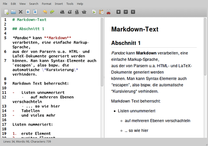

Pandoc
Dieser Artikel wurde für die folgenden Ubuntu-Versionen getestet:
Ubuntu 16.04 Xenial Xerus
Ubuntu 14.04 Trusty Tahr
Zum Verständnis dieses Artikels sind folgende Seiten hilfreich:
 Pandoc
Pandoc  ist ein Dokumentenkonverter für die Kommandozeile. Mit ihm können Textdateien, die in einer Auszeichnungssprache verfasst wurden, in ein anderes Format wie LaTeX oder HTML umgewandelt werden (Liste der unterstützten Formate). Das Programm wurde von John MacFarlane in Haskell geschrieben und steht unter der GPL-Lizenz.
ist ein Dokumentenkonverter für die Kommandozeile. Mit ihm können Textdateien, die in einer Auszeichnungssprache verfasst wurden, in ein anderes Format wie LaTeX oder HTML umgewandelt werden (Liste der unterstützten Formate). Das Programm wurde von John MacFarlane in Haskell geschrieben und steht unter der GPL-Lizenz.
Auf der Homepage von Pandoc gibt es die Möglichkeit, Pandoc online auszuprobieren .
Hintergrund¶
Im Internetzeitalter werden Texte häufig in verschiedenen Formaten benötigt. Ein vorstellbarer Anwendungsfall ist bspw. die Ausarbeitung von Notizen zu einem Blogartikel, der leicht abgeändert als Wikipedia-Artikel publiziert und anschließend mit LaTeX zu einem Aufsatz umgeschrieben wird, bevor er als LibreOffice-Dokument an eine Zeitschrift versandt wird. Die Kernthesen des Aufsatzes werden schließlich in Folienform auf einer Konferenz präsentiert und auf einer Webseite der Öffentlichkeit zugänglich gemacht.
Hier setzt Pandoc an: Es erlaubt die Konvertierung in die erforderlichen Formate. Ausgangsformat ist dabei im Idealfall eine – meist intuitiv verständliche – vereinfachte Auszeichnungssprache wie Markdown oder ReStructuredText.
Hinweis:
Bei komplexeren Ausgangsformaten (wie bspw. LaTeX) kann es sein, dass die Konvertierung Fehler aufweist. Ein häufiges Problem sind beispielsweise typographische Anführungszeichen. Die von Pandoc erzeugte Ausgabedatei sollte daher vor der Weiterverwendung überprüft werden.
Eine solche – in einer vereinfachten Auszeichnungssprache geschriebene – Datei (hier im Markdown-Format) kann wie das folgende Beispiel aussehen:
# Markdown-Text
## Abschnitt 1
*Pandoc* kann **Markdown** verarbeiten, eine einfache Markup-Sprache,
aus der von Parsern u.a. HTML- und LaTeX-Dokumente generiert werden
können. Man kann Syntax-Elemente auch "escapen", also bspw. die automatische \*Kursivierung\* verhindern.
Markdown Text beherrscht:
- Listen unnummeriert
- auf mehreren Ebenen verschachteln
- ... so wie hier
- Tabellen
- und vieles mehr
Listen nummeriert:
1. erste Element
2. zweites Element
Linien:
- - -
## Abschnitt 2
Außerdem gibt es noch weitere Auszeichnungselemente, bspw. Zitatblöcke:
> "All stories are true ... But this one really happened, if that’s what you mean."
### Abschnitt 2a
Dieses Dokument ist nur ein simples Beispiel!
Wenn man einen Markdown-Editor wie ReText, Typora oder utext verwendet, kann man bereits innerhalb eines Vorschaufensters die Auszeichnung verfolgen.
|  |
| Markdown-Editor utext mit Vorschaufenster |
Pandoc wandelt diese Datei auf Wunsch bspw. in ein LaTeX-Dokument um. Das Ergebnis einer solchen Umwandlung mit:
pandoc -s -S -f markdown -t latex -o ausgabe.tex eingabe.md
sieht wie folgt aus:
1 2 3 4 5 6 7 8 9 10 11 12 13 14 15 16 17 18 19 20 21 22 23 24 25 26 27 28 29 30 31 32 33 34 35 36 37 38 39 40 41 42 43 44 45 46 47 48 49 50 51 52 53 54 55 56 57 58 59 60 61 62 63 64 65 66 67 68 69 70 | \documentclass{article} \usepackage{amssymb,amsmath} \usepackage[mathletters]{ucs} \usepackage[utf8x]{inputenc} % Redefine labelwidth for lists; otherwise, the enumerate package will cause % markers to extend beyond the left margin. \makeatletter\AtBeginDocument{% \renewcommand{\@listi} {\setlength{\labelwidth}{4em}} }\makeatother \usepackage{enumerate} \usepackage[breaklinks=true,unicode=true,pdfborder={0 0 0}]{hyperref} \setlength{\parindent}{0pt} \setlength{\parskip}{6pt plus 2pt minus 1pt} \setcounter{secnumdepth}{0} \begin{document} \section{Markdown-Text} \subsection{Abschnitt 1} \emph{Pandoc} kann \textbf{Markdown} verarbeiten, eine einfache Markup-Sprache, aus der von Parsern u.a. HTML- und LaTeX-Dokumente generiert werden können. Man kann Syntax-Elemente auch ``escapen'', also bspw. die automatische *Kursivierung* verhindern. Markdown Text beherrscht: \begin{itemize} \item Listen unnummeriert \begin{itemize} \item Mit mehreren Verschachtelungsebenen \item \ldots{} so wie hier \end{itemize} \item Tabellen \item und vieles mehr \end{itemize} Listen nummeriert: \begin{enumerate}[1.] \item erste Element \item zweites Element \end{enumerate} Linien: \begin{center}\rule{3in}{0.4pt}\end{center} \subsection{Abschnitt 2} Außerdem gibt es noch weitere Auszeichnungselemente, bspw. Zitatblöcke: \begin{quote} ``All stories are true \ldots{} But this one really happened, if that's what you mean.'' \end{quote} \subsubsection{Abschnitt 2a} Dieses Dokument ist nur ein simples Beispiel! \end{document} |
An dieser Beispiel-Datei sieht man auch gut, dass Pandoc sich nicht an deutsche Formatierungs- und Maßeinheitskonventionen hält. Bei einer Umwandlung in eine LaTeX-Datei sollte daher das Ergebnis entweder noch manuell korrigiert oder Pandoc zusätzliche Angaben zur gewünschten Formatierung (d.h. insbesondere: eine individuelle Präambel) übergeben werden.
Installation¶
Pandoc ist in den offiziellen Paketquellen enthalten. Es muss folgendes Paket installiert [1] werden:
pandoc (universe)
 mit apturl
mit apturl
Paketliste zum Kopieren:
sudo apt-get install pandoc
sudo aptitude install pandoc
Bedienung¶
Optionen¶
Pandoc kennt folgende Optionen:
| Optionen | |
| Option | Beschreibung |
-c URL oder --css=URL | Link auf ein CSS-Style-Sheet |
--columns=ZAHL | Angabe der Buchstaben pro Zeile (bei aktiviertem automatischen Zeilenumbruch) |
--data-dir=DIRECTORY | Verzeichnis, in dem Pandoc nach Dateien sucht (z.B. nach einzubindenden CSS-Stylesheets). Standard: ~/.pandoc/ |
--epub-stylesheet=DATEI | Verwendung von DATEI (ein CSS-Style-Sheet epub.css) als Formatvorlage für eine EPUB-Ausgabe |
-f FORMAT oder -r FORMAT | Format der Eingabedatei |
-N oder --number-sections | Nummerierte Abschnitte in LaTeX-, ConTeXt- oder HTML-Ausgaben (Standard: nicht nummeriert) |
--no-wrap | Deaktivierung des automatischen Zeilenumbruchs (Standard: mit für Ausgabeformat passenden Werten aktiviert) |
--normalize | Vereinheitlichung des Dokuments (Bsp.: Entfernung aufeinander folgender Leerzeichen) |
-o DATEI oder --output=DATEI | Ausgabe in DATEI, nicht nach stdout |
--reference-odt=DATEI | Verwendung von DATEI als Formatvorlage für eine ODT-Ausgabe |
-s oder --standalone | Ausgabedatei enthält bereits passende Header- und Footer-Felder (Bsp.: vollständiges LaTeX-Ausgabedokument, Präambel also enthalten) |
-S oder --smart | Typographisch korrekte Konvertierung (Beispiele: typographische Anführungszeichen, Halbgeviertstrich, …) (für LaTeX- und ConTeXt-Ausgaben ist die Option Standard) |
-t FORMAT oder -w FORMAT | Format der Ausgabedatei |
--template=DATEI | DATEI wird als Vorlage für das Ausgabedokument verwendet (nur mit --standalone) |
--toc oder --table-of-contents | Automatische Generierung von Inhaltsverzeichnis in Ausgabedokument |
Weitere Optionen und teilweise detailliertere Angaben sind der Manpage zu entnehmen.
Unterstützte Formate¶
Pandoc unterstützt folgende Formate (diese Tabelle bezieht sich auf die aktuelle Version, die nicht der unter Ubuntu installierten entsprechen muss):
| Von Pandoc unterstützte Formate | |||
| Formatname | Optionsname | Eingabe | Ausgabe |
| ConTeXt | context | nein | ja |
| DocBook XML | docbook | ja | ja |
| Emacs Org-Mode | org | ja | ja |
| EPUB | epub | ja | ja |
| GNU Texinfo | texinfo | nein | ja |
| groff (Manpages) | man | nein | ja |
| Haskell | native | ja | ja |
| HTML | html | ja | ja |
| HTML 5 | html5 | nein | ja |
| JSON | json | ja | ja |
| LaTeX | latex | ja | ja |
| Markdown | markdown | ja | ja |
| Mediawiki | mediawiki | ja | ja |
| ODT (Open Document Text) | odt | ja | ja |
| OpenDocument XML | opendocument | ja | ja |
| ReStructuredText | rst | ja | ja |
| RTF (Rich Text Format) | rtf | nein | ja |
| S5 | s5 | nein | ja |
| HTML Slidy | slidy | nein | ja |
| (Plain) Text | plain | nein | ja |
| Textile | textile | ja | ja |
Beispiele¶
Markdown nach ODT¶
Eine Markdown-Datei eingabe.md kann mit folgendem Befehl in ein ODT-Dokument (LibreOffice) umgewandelt werden:
pandoc eingabe.md -o ausgabe.odt
Vollständig ausgeschrieben würde der Befehl lauten:
pandoc -f markdown -t odt eingabe.md -o ausgabe.odt
ReStructuredText nach HTML¶
Der folgende Befehl erzeugt aus der RST-Datei eingabe.rst ein HTML-Dokument ausgabe.html mit einem Inhaltsverzeichnis (--toc), Header und Footer (-s) und typographisch korrekten Zeichen (-S). Zur Formatierung wird die Datei ~/.pandoc/format.css herangezogen.
pandoc -s -S --toc -c ~/.pandoc/format.css eingabe.rst -o ausgabe.html
Pandoc können auch mehrere Eingabedateien übergeben werden:
pandoc -s -S --toc -c ~/.pandoc/format.css -o ausgabe.html eingabe1.rst eingabe2.rst eingabe3.rst
Manpage aus Markdown-Datei¶
Der folgende Befehl erzeugt aus der Markdown-Datei eingabe.md die Manpage ausgabe.1:
pandoc -s -w man eingabe.md -o ausgabe.1
Textdatei aus Webseite¶
Der folgende Befehl erzeugt aus dieser Webseite eine einfache Textdatei:
pandoc -s -t plain -r html http://wiki.ubuntuusers.de/ubuntuusers/Moderatoren/Richtig_fragen -o ausgabe.txt
E-Book-Erstellung (EPUB)¶
Ein sehr einfaches E-Book im EPUB-Format kann man erstellen, indem man in einem Editor [2] folgenden Inhalt eingibt und als Datei eingabe.txt abspeichert:
% Mein erstes Buch % Johann Wolfgang von Goethe, Jr. Das ist mein Buch # Kapitel 1 Aller Anfang ist schwer. # Kapitel 2 So long, and thanks for all the fish: Das war's dann auch schon!
Anschließend kann die Datei mit folgendem Befehl in ein E-Book umgewandelt werden:
pandoc eingabe.txt -o meinbuch.epub
Eine Anleitung zum Erstellen komplexerer E-Books findet sich auf der Website von Pandoc.
PDF-Ausgabe¶
Pandoc kann – über LaTeX – praktisch aus jedem Eingabeformat eine PDF-Datei erzeugen:
pandoc eingabe.md -o ausgabe.pdf pandoc eingabe.txt -o ausgabe.pdf
In früheren Versionen wurde das zusätzliche Hilfsprogramm markdown2pdf verwendet, das ausschließlich mit Markdown funktionierte:
markdown2pdf eingabe.md -o ausgabe.pdf
MediaWiki-Konvertierung¶
Um eine Datei im MediaWiki-Format (wie es von der Wikipedia genutzt wird) zu erstellen, muss folgender Befehl verwendet werden (hier mit einer reST-Eingabedatei):
pandoc -s -S -t mediawiki --toc eingabe.rst -o ausgabe.wiki
Links¶
Pandoc User’s Guide
– Offizielle AnleitungExamples
– BeispieleCreating an Ebook with Pandoc
– Erstellung eines (mit einer CSS-Datei) formatierten E-Books
uText: Gelungener Markdown-Editor für Linux
 - grafische Erstellung und Bearbeitung, Blogbeitrag 08/2015
- grafische Erstellung und Bearbeitung, Blogbeitrag 08/2015Folien mit Pandoc erstellen
- Blogbeitrag, 10/2013Markdown Files zu PDF konvertieren
– Alternative Header für Latex-Dateien einbinden. Blogbeitrag, 04/2010Flott durchgereicht - Texte konvertieren mit Pandoc
– Linux User, 12/2010docutils – Umwandlung von Textdateien
Shell/Anwendungen
 Übersichtsartikel
Übersichtsartikel
- Erstellt mit Inyoka
-
 2004 – 2017 ubuntuusers.de • Einige Rechte vorbehalten
2004 – 2017 ubuntuusers.de • Einige Rechte vorbehalten
Lizenz • Kontakt • Datenschutz • Impressum • Serverstatus -
Serverhousing gespendet von